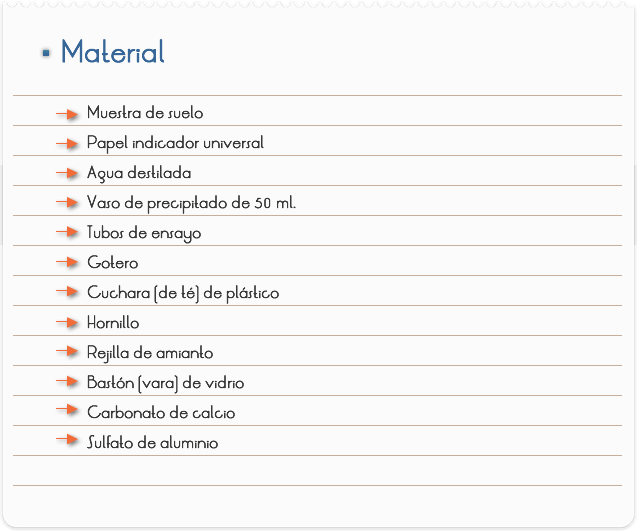
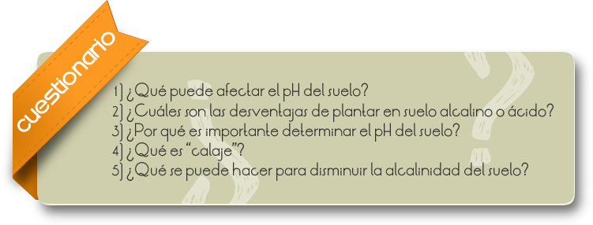

Introducción
PARTE I
La disolución por agua de ciertos minerales, así como el uso de determinados fertilizantes, pueden dejar el suelo ácido, lo que perjudica el crecimiento de algunos vegetales (soja, frijol y trigo) y disminuye la acción de microorganismos presentes en el suelo.
Puede suceder, también, que el suelo se ponga alcalino, principalmente en regiones áridas y con poca lluvia, ese tipo de suelo puede ser perjudicial para el crecimiento de las plantas. La "peca de la batatita" es causada por una bacteria que vive en suelos alcalinos.
Podemos determinar el PH del suelo para que pueda ser corregido y adecuarlo mejor para un determinado cultivo.
PARTE II
Para disminuir la acidez de los suelos se utiliza la "calaje", que consiste en añadir al suelo materiales calcáreos que contengan calcio y magnesio (calcáreos calcídicos, dolomíticos o magnesiano).
Para disminuir la alcalinidad pueden agregarse al suelo sulfato de hierro II, sulfato de aluminio o yeso.
Objetivos
Determinar y corregir el pH del suelo.

1. Colocar un poco de agua destilada en el vaso de precipitado y calentar hasta la ebullición.
2. Colocar en un tubo de ensayo una cuchara de muestra de suelo, agregar agua destilada, hasta la altura de 2 cm. y sacudirlo bien.
3. Esperar que sedimente, retirar con el cuentagotas el líquido superficial, pasándolo a otro tubo, y colocar una tira de papel indicador universal. No deshacerse del contenido del tubo.
4. Compara el color de la tira de papel con los colores indicados en el rótulo del envoltorio del papel universal y anotar el valor del PH correspondiente.
PARTE II: CORREGIR EL PH DEL SUELO
Si el pH del suelo resulta menor que 6, agregar al tubo una pequeña cantidad de carbonato de calcio (una puntita de la cuchara), sacudir con fuerza y comparar el color con la escala correspondiente o agregar una tira de papel indicador universal.
Si el pH de la muestra del suelo resulta mayor que 76, agregar una pequeña cantidad de sulfato de aluminio (una puntita de la cuchara), sacudir con fuerza y comparar el color con la escala correspondiente o agregar una tira de papel indicador universal.
